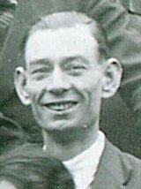
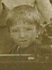

John Whitaker (Paramore), 1867 - 1909
John Whitaker was born in Sneinton Nottingham in 1867, the son of George Paramore Whitaker and Charlotte Old. George was a bricklayers labourer and he and his wife Charlotte had married the previous year. John was eventually the oldest of six children. His mother Charlotte also had three children from her previous marriage to George Parris in 1859. In 1871 the family were living at Dennett Terrace off Hebert Street, Sneinton.
As a child John used the surname 'Whitaker Paramore', Paramore being the family name of his maternal grandmother and occasionaly used as a surname by his father. John's father died in 1885 when John was 17. After his fathers death John had dropped 'Paramore/Parrowmore' and referred to himself as simply 'Whitaker'. In 1887, at the age of 19, John enlisted briefly in the militia battalion of the Derbyshire Regiment. At this time he was a labourer for Wrights Albany Bleach Works in Carlton Road.

In 1891 John was a groom and one of fourteen household staff to the family of Sir Alfred Hickman, Ironmaster and Conservative MP of Goldthorn Hill, Sedgley Staffordshire.
In 1901 John had returned to Nottingham and was living with his mother and brother in Vine Place. John's mother, Charlotte, was described as a 'monthly nurse', a post-natal carer. John is a 'corporation carter'. It was around this time that John met Eliza Fowler . Eliza had been abandoned by her husband James in about 1895 and was left to fend for four children between the ages of 6 and a new born baby. James disappears from the public record. John Whitaker and Eliza Peck were distantly related but we don't know if they were aware of this. Eliza's stepmother was Mary Whitaker who was the half-sister of John's grandfather. It may be that they met via a family connection.

In 1902 Eliza gave birth to their first child John (known as Jack). John was followed by two more children, May in 1905 and Horace in 1907. However, it is not clear whether John moved into Eliza's home with the children or remained with his mother. Furthermore, all three children were registered with James Fowler as the stated father even though DNA testing has proven otherwise.



May Fowler
Horace Fowler
John Whitaker died of tuberculosis on 12 December 1909 at the Workhouse Infirmary at Bagthorpe. He was described as a gasworks labourer of Evelyn Street. Present at the death was his mother Charlotte. At his deah John is registered as 'Whitaker Parramore'. He was buried in Nottingham General Cemetery.